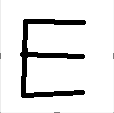

Tere tulmast!
see on index leht mis on tehtus 1. veebirakenduste tunr palun vajata teise lingi peale ning kontrolli et sisu on täidetud!
Põnev pilt

Uus efekt: slideToggle ja fadeToggle
Juhend kasutajale
- ===> / <=== esimene kast liigub paremale või vasakule.
- Peida / Kuva esimene kast peidetakse või kuvatakse uuesti.
- Lohista hiirega esimest kasti või pildiga kasti pildi all näed koordinaate (x, y).
- Libista sinine kast libiseb üles kinni, teisel vajutusel libiseb tagasi lahti.
- Hajuta sinine kast hajub järk-järgult ära, teisel vajutusel ilmub tagasi.